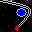

Chaos is a simulation of gravitational effects using Newtonian Laws of Motion,
Inertia, and Mutual Attraction in a 2-Dimensional universe.
The Chaos Screen Saver just moves dots around on the screen. Nothing else.
Each of the colored dots represents a free floating object. The color indicates
the relative mass. When objects collide they merge in to one object (mass and
inertia are merged/recalculated) and another object of random mass is randomly
placed. During each run there is a constant number of objects on the screen.
Gravity is the product of the mass over the square of the distance.
All movement is caused be mutual attraction.
All objects start with zero velocity.

Click here to install the Chaos Screen Saver
When prompted,
Select: Open or Run this program from its current location
Press: Yes or OK to the install & run question
In the Display Properties Control Panel you may:
Press: Preview; (to view)
Press: Settings... (to adjust)
You can adjust the initial mass, making the action happen faster.
You can adjust the number of objects on the screen at one time.
Press: OK
Click here to send a link to this page to a friend using your email program
Freeware legal stuff:
Chaos is provided "AS IS" without warranty.
Chaos was not written to have any spyware or malicious intent.
Chaos is for free use and free distribution and may not be modified.